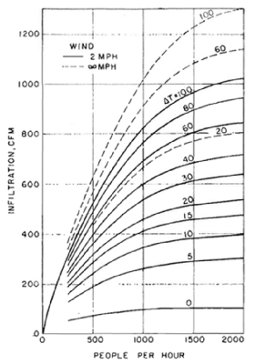
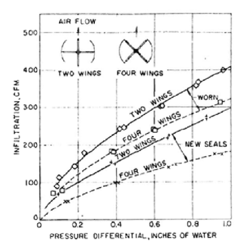
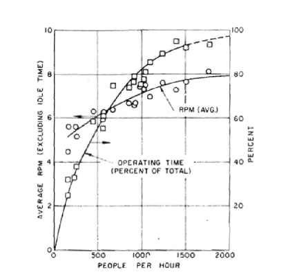
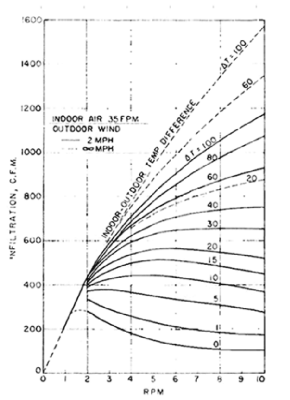

Existing research¶
Estimating revolving door efficiency ought to be a straightforward empirical experiment. It would go something like this:
- Find a building with a revolving door
- Measure traffic flow and temperature for a while
- Block the revolving door and measure how much more energy the building uses under similar conditions
The only slightly suspect part would be the mathematical hijinx to control for temperature and traffic volume, but even Lloyd Christmas could grapple with the concept.
But that would be too simple. All existing research seems to depend on inscrutable mathematical models and there seems to be none that actually puts two doors of different types in the same conditions. None deigns to help the layman choose a door.
Fluid dynamics is hard. It seems odd that we should need advanced degrees to estimate what fairly simple experiments could demonstrate.
The MIT study¶
If you bring the question up, your friends might turn to the Internet and soon decide that of course revolving doors are more efficient, because MIT says so (PDF).
Trouble is, that study did not test revolving door efficiency.
Actually, some MIT students measured what sort of sign most effectively coerced door users to alter from swinging to revolving doors. They did no original research on door efficiency and included the energy savings numbers merely to justify proposed signage. While the calculations could be correct, the paper contains too litle information to replicate them [1].
| [1] | Interestingly, many Internet sources claim this study says revolving doors exchange eight times less air than swinging, but that figure appears nowhere in the paper. |
Despite having studied something completely different, the MIT behavioral study turns out to be the Internet’s most popular source on revolving door efficiency. Of Google’s top ten search results for “revolving door efficiency,” one is the paper itself; eight of the other nine refer to it. So even though it seems silly to argue with a term paper as if it were intended to be scientifically rigorous on a topic it did not even study, it deserves a response. In short, there is good reason to doubt its energy efficiency calculations.
The paper is useful, however, as a starting point to the sources it used to calculate the difference. For swinging doors, it used some charts from 1958 Winter Infiltration Through Swing-door Entrances in Multi-story Buildings. For revolving doors, it used Schutrum’s study.
Schutrum’s experiment¶
Despite being apparently unavailable on the Internet, Schutrum’s 50 year-old study seems to be the most definitive work on revolving door efficiency. According to the International Building Performance Simulation Association’s review (PDF):
Schutrum et al. (1961) performed experimental research on the air infiltration and air leakage through revolving doors, under heating and cooling conditions, using the tracer gas technique. For more than 40 years, this was the only source of information available for the estimation of heating load due to air infiltration through this type of doors.
That review presented Schutrums original formula and a refined mathematical model, but no new empirical research. For the less mathematicall inclined, Schutrum’s work reduces to several grainy but useful charts, which the MIT study used for its infiltration estimates:
   {kind=link}
{kind=link}
{kind=link}
{kind=link}
The first chart allows for estimating air infiltration as a function of traffic rate, when traffic rate is higher than 250 people per hour. All charts like this, that estimate air exchange due to door motion, deduct leakage through door seals, represented in the second chart as a function of pressure, seal condition and whether two or four wings touch the door enclosure.
For traffic less than 250 people per hour, Schutrum gives us a chart that allows estimating how for how much time the door is in motion and, while in motion, at what speed. Interestingly, but not surprisingly, it shows higher door speed in places with more traffic. Given that information, plus temperature difference, the final chart allows for a second method of estimating infiltration due to door motion.
It is unfortunately not entirely clear how to assess the operating time and and speed chart. Since I do not have a copy of Schutrum’s study, I can only go off those who cited him. The MIT study labels the chart “traffic rate of manually operated revolving door,” but Lin Du says Schutrum based the data on “field tests… to obtain the performance of motor-operated revolving doors.”
Assuming, in any case, that the operating time and speed chart does represent manually operated door motion, we can calculate infiltration from Schutrums graphs two ways. At, say 32 degrees Farenheit outside and 72 inside, with 1000 people per hour traversing a revolving door, we could estimate infiltration at 610 cubic feet per minute from the first chart. Alternatively, from the second chart, take an average rotation speed of 7.1 revolutions per minute for 83% of time; then and reading 720 cubic feet per minute from the last chart and multiplying by 83%, we arrive at 600 cubic feet per minute.
Lin Du’s thesis¶
Lin Du set out to replicate Schutrum’s work (PDF) in small scale. Unfortunately, the thesis muddies the issue since its results vary wildy from Schutrum’s. Lin Du reports:
At rotation speed of 3.6 rpm in prototype, the air infiltration rate due to the motion of the door from Schutrum et a. (1961) is 325 L/s, while it is only 4.5 L/s from present research… there is no other publication available for the for the comparison of the data of air flow rate caused by the motion of the revolving door…
So with empirical testing and comprehensively reviewing research up to 2009, the best this thesis could do was conclude, “There is still not sufficient information about the amount of the air infiltration due to the motion of the door.”
Other work¶
The Australian Government publishes a information on a revolving door retrofit in Canberra. It states specifically that with the original sliding door design, winter atrium temperatures were 7 to 8 degrees Celcius below the target temperature, so to achieve the target atrium temperature, the project retrofitted the building with revolving doors. The “factsheet” then claims success but evasively states that, “Installation of the revolving doors has enabled the [facilities] team to further fine tune the Atrium temperature controls.”
Most of the studies lie safely behind academic paywalls:
- Zmeureanu et al. test revolving door seal leakage to see whether stationary doors measured up to standards. They did not.
- Allgayer and Hunt studied water flow around revolving doors. If you’re keen to spend money, you can get Allgayer’s book from Amazon.
- Zmeureanu published what looks from the abstract like a trimmed copy of Lin Du’s study.
- Karlsson finally compared different door types (PDF), but only in computer simulation.
- TUDelft University did a study on traffic flow, intended for use in a simulation of revolving doors, but I can’t find much more on it
So the ordinary curious and responsible citizen seeking a clear guide to door choice can only deduce that more than a century’s science has yet to yield something useful.